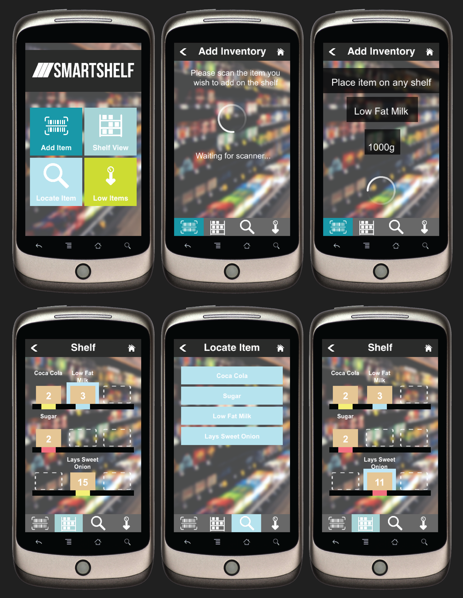
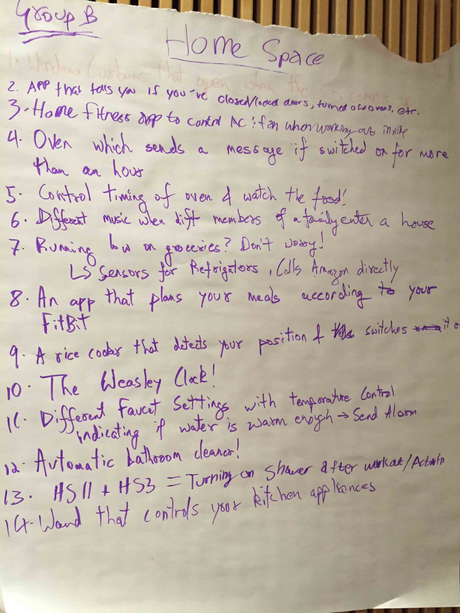
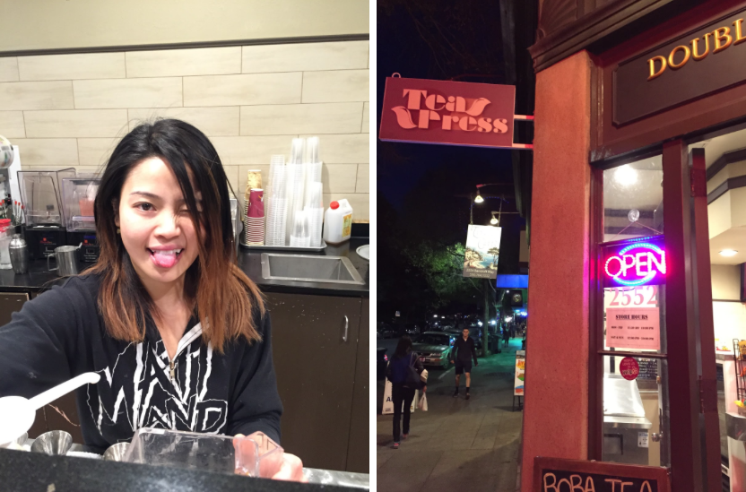
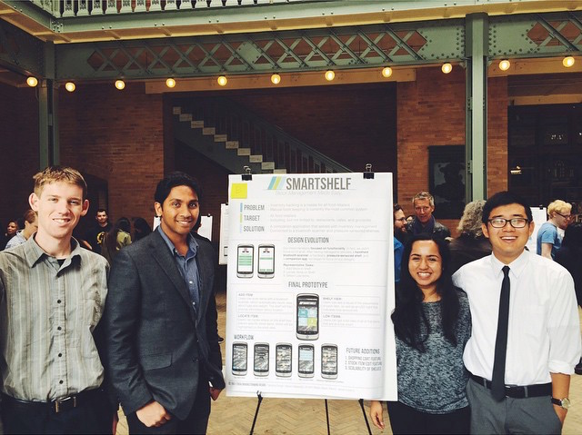

SmartShelf
During my spring 2015 semester, I took Computer Science 160: User Interface, through which I worked with a group of three others for about 3-4 months to develop an IoT smart shelf device that worked hand-in-hand with a phone application to assist users in keeping track of inventory, ordering new stock when necessary, and facilitating better and faster workflow. This was my first UX/Interaction design project ever; my contributions included extensive user research, sketches, wireframes, prototypes, and user tests.
See Process Overview See Final Presentation

The Project
CS160 served as an introduction to Human Computer Interaction (HCI), through which we learned to prototype, evaluate, and design a user interface. Each group was asked to develop a companion app that worked with a connected device. In order to complete our assignment, we were directed towards Kinoma Studios, a cross-platform app development framework built on top of JavaScript.
Ideation
To begin our project, my group and I had to pick an idea to develop. To narrow down the infinite amount of ideas, we decided to pick focus areas and come up with different ideas that fell under those selections. As we wanted to address an important problem that impacted real people, we picked the following focuses: (1) Problems that could come up at home (2) Problems that could arise through transportation (3) Problems that could emerge at work (4) Problems that could come up when exercising.
I initially worked on the transportation space. As a group, however, we decided to shift our direction towards the home space i.e. by developing an app that would allow users to purchase groceries, remind them to go to the grocery store depending on proximity at any given time, list store specific sales, and track expiration dates.
From there, we addressed a target user group: well-established working professionals who have families and working spouses. We understood that such a demographic would find great use for an application that facilitated what was in their refrigerator, as they were concerned about their families' health and needed something that saved them time.
I initially worked on the transportation space. As a group, however, we decided to shift our direction towards the home space i.e. by developing an app that would allow users to purchase groceries, remind them to go to the grocery store depending on proximity at any given time, list store specific sales, and track expiration dates.
From there, we addressed a target user group: well-established working professionals who have families and working spouses. We understood that such a demographic would find great use for an application that facilitated what was in their refrigerator, as they were concerned about their families' health and needed something that saved them time.
See Full Ideation

Changing Directions + Contextual Inquiry
The next part of our project was to begin delving into research. However, as my group and I began thinking about our idea, we realized the difficulty in finding a diverse group within our demographic that would be comfortable with allowing a group of college students into their respective homes. We decided to shift our initial idea from working families to food retailers, as we believed it would be easier to conduct interviews and research with local businesses. Accordingly, we transferred our fridge management idea to a stock management idea.
From this point, we targeted different businesses (family-owned, mid-sized, and chains). I was tasked with conducting a contextual inquiry with a local, family-owned boba/snack shop. As such, I observed the work of the front-head employee, who attended the cash register and made all of the drinks. I kept note of the processes with respect to stock use and asked the employee to talk through everything she did.
I picked up on the employee's mental headcount of stock, gauging most of her stock usage intuitively. Additionally, after an hour of stepping through her most immediate duties with customers, I asked how she began her day and ended it. She specifically clarified that she only occassionally took down stock items. Instead, she had an intuitive means of calculating what she needed and when she needed to restock.
From this point, we targeted different businesses (family-owned, mid-sized, and chains). I was tasked with conducting a contextual inquiry with a local, family-owned boba/snack shop. As such, I observed the work of the front-head employee, who attended the cash register and made all of the drinks. I kept note of the processes with respect to stock use and asked the employee to talk through everything she did.
I picked up on the employee's mental headcount of stock, gauging most of her stock usage intuitively. Additionally, after an hour of stepping through her most immediate duties with customers, I asked how she began her day and ended it. She specifically clarified that she only occassionally took down stock items. Instead, she had an intuitive means of calculating what she needed and when she needed to restock.

With the insight from the inquiries, we began task analyses. We discussed how the current stock management process was very free form, with very little aiding software. We also noticed the high learning curve with regards to developing an intuition. Naturally, we wanted to ensure that that intuitive understanding remained, but we wanted to provide a product that could help curate that intuition and exist as a concrete data provider. Walking through the work flows of the different businesses, we picked four primary tasks:
Read Full Report
- Automatic tracking of inventory
- Notifications when inventory is low
- Notifications and tracking of expiration dates for items with backend support
- Direct requests for more supplies
Lo-Fi Prototypes + User Tests
We initially completed sketches on notecards and played around with different layouts and functions. Utilizing feedback from those sketches, we moved onto Balsamiq to create an interactive lo-fi prototype. The following video contextualizes our product and showcases our Balsamiq prototype.
Next, we conducted lo-fi tests, through which we learned the following:
Read Full Report- It was a good idea to incorporate a bluetooth scanning device since the target audience was familiar with this technology. The scanner would be the main source of item information that the app and the simulator would use.
- Of all the tasks, users had most trouble using the "locate item" functionality because there wasn't a button that explicitly expressed said funtion.
- User feedback indicated that specific numbers for remaining items would be preferable to a plain list of low-stock items
- We received input to incorporate a shop cart feature. We decided that this was an implementation we would like to list as a 'future addition'.
Interactive Prototype + User Studies
As we developed the lo-fi prototype and conducted user tests, we also began working with Kinoma Studios to develop our final product. To that extent, we did not spend much time focusing on the UI, rather we ensured that the product was functioning well, incorporated usable language, and created an intuitive workflow. The following video showcases our interactive prototype:
We, then, conducted another round of usability tests, directing users to add stock items through our app, locate items, and check/detect low stock. We were directed to the following changes:
Read Full Report- Fix the color scheme and consistency
- Add symbols and better instructions for making a new item
- Add item information and clickable items anywhere on the app
- Improve appearance of the application
Final Design
As we had spent much of the previous iterations on research, functionality, and user testing, we spent the majority of this round brushing up the UI. The challenge for us was to ensure that a sleek looking UI could also heighten the functionality. For example, we dedicated our application to address four specific functions. On the first view, we didn't want to create a heirarchy of importance yet we wanted to maintain an order that made chronological sense within the stock management process. Accordingly, we decided to go with the, then popular, tile view. For each of the subsequent views, we ensured consistency in look and also integrated a bottom navigation bar.
Takeaway
This course was my first introduction to UX Design, as well as my inspiration to delve further into the world of human-centered design. With that in mind, this course has taught me so much with regards to the design process: the intricacies of each step; the monstrous amounts of thought required; and how the design process is not about the visuals but the development to create a product that assists people in the best way possible. Certainly, I was blessed to have had the opportunity to take this course and to have had such a strong team through it all.
